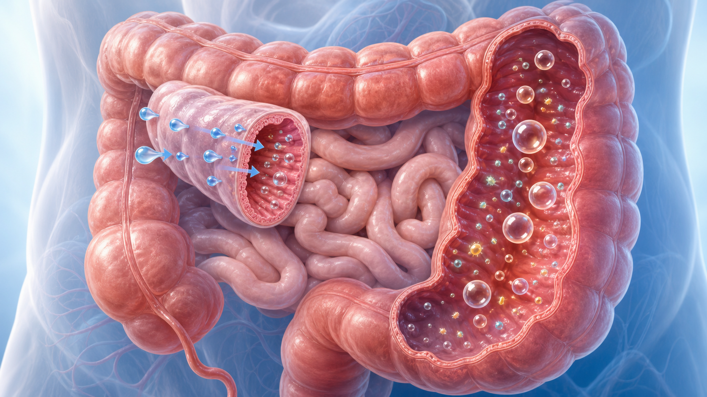
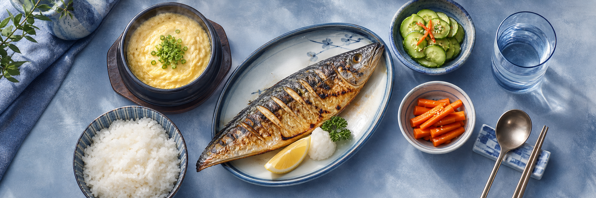

과민성장증후군(IBS) 식사 가이드 — 저FODMAP 3단계
과민성장증후군은 장과 뇌의 신호가 예민해져 생기는 장-뇌 상호작용 질환입니다. 마음의 문제가 아니며, 식단 조절만으로도 10명 중 5~8명에서 복통·팽만 증상이 뚜렷이 좋아집니다.
한눈에 보는 핵심 수치
증상 호전률
50~86
% (저FODMAP 식단)
마늘·양파·밀가루 식사 후 — 복통·팽만
저FODMAP 식사 후 — 편안한 일상
같은 사람이라도 무엇을 먹었는지에 따라 증상이 달라집니다 — 음식은 IBS의 가장 강력한 조절 스위치입니다.
FODMAP이 증상을 일으키는 원리
FODMAP = 장에서 흡수되지 않는 발효성 당류
- ① 소장에서 흡수되지 못하고 — 물을 장 안으로 끌어들여 설사·꾸르륵 소리를 유발합니다.
- ② 대장에서 세균에 의해 발효되어 — 가스가 차고 장이 부풀어 팽만감이 생깁니다.
- ③ 예민해진 장은 이 자극을 통증으로 — 같은 가스량에도 IBS 환자는 더 아프게 느낍니다.
- 대표 FODMAP: 과당(사과·꿀) · 유당(우유) · 프럭탄(마늘·양파·밀) · GOS(콩류) · 폴리올(자일리톨·수박)

소장 — 물 유입
대장 — 가스 발효
저FODMAP 식단 3단계 — 반드시 끝까지 진행하세요
1단계 · 제한
2~6주 만!
고FODMAP 식품을 모두 줄이고 증상 일지를 씁니다. 좋아지는지 확인하는 진단 단계이며, 장기간 지속하면 장내 유익균과 영양이 손해를 봅니다.
2단계 · 재도입
6~8주
FODMAP 그룹을 한 번에 하나씩, 3일 간격으로 다시 먹어보며 나의 ‘진짜 범인’과 견딜 수 있는 양을 찾습니다.
3단계 · 개인화
평생 유연하게
문제 없는 음식은 모두 되돌리고, 문제 식품만 양을 조절합니다. 가장 다양하게 먹으면서 증상 없는 식단이 최종 목표입니다.
한국 음식 FODMAP 신호등과 실천 수칙
김치·된장까지 끊을 필요는 없습니다. 한식 기준으로 ‘마음껏 · 양 조절 · 잠시 중단’을 나누고, 흔한 오해와 일상 실천법을 정리했습니다.
마늘·양파 대신 — 파 초록 부분 · 생강 · 향만 우린 마늘 기름

제한기에도 든든한 한 끼 — 쌀밥 · 생선구이 · 달걀찜 · 오이 · 당근
한국 음식 FODMAP 신호등 (제한기 2~6주 기준)
🟢 마음껏
쌀밥·감자 · 고기·생선·달걀 · 단단한 두부 · 오이·당근·상추·애호박 · 바나나·딸기·키위
배추는 한 끼 75g까지 안전 — 배추전·겉절이 소량 OK
안심
🟡 양 조절
김치 2~3큰술 · 전통 된장 1큰술(12g) · 간장 · 고구마 ½개
김치는 1~2젓가락부터 늘리며 증상 기록 — 끊지 않아도 됩니다
소량 OK
🔴 잠시 중단
마늘·양파 (소량도) · 밀가루(빵·면·라면) · 사과·배·수박 · 우유·아이스크림 · 콩류·버섯 · 꿀·올리고당
고추장·쌈장·시판 양념은 마늘·물엿 때문에 제한기엔 보류
제한기 회피
※ 같은 식품도 양에 따라 판정이 달라집니다 — ‘무엇을’보다 ‘얼마나’가 핵심 (Monash 측정 기준). 💡 대체하기: 마늘 → 마늘향 기름·파 초록 부분 · 밀면 → 쌀국수·100% 메밀 · 우유 → 락토프리 · 꿀 → 설탕 소량.
흔한 오해 3가지 & 매일 실천 수칙 7가지
오해 바로잡기 (Myth → Fact)
- “평생 엄격하게 가려 먹어야 한다”
→ 엄격한 제한은 2~6주만. 그 후엔 다시 늘려가는 것이 정석입니다.
- “글루텐(밀)을 무조건 끊어야 한다”
→ 진짜 원인은 글루텐이 아닌 밀의 프럭탄인 경우가 많습니다. 설사형은 셀리악병 검사를 먼저 확인합니다.
- “스트레스 때문이니 마음먹기 나름이다”
→ IBS는 장 운동·감각 이상이 확인되는 실제 신체 질환입니다. 스트레스는 악화 요인일 뿐 원인의 전부가 아닙니다.
매일 실천 수칙 7
- 1. 규칙적으로, 소량씩, 천천히 먹고 과식을 피합니다.
- 2. 증상 일지 — 먹은 것과 증상을 2주간 기록해 나만의 유발 음식을 찾습니다.
- 3. 마늘·양파부터 점검 — 가장 흔한 ‘숨은 범인’입니다.
- 4. 성분표 확인 — 양념·가공식품의 마늘·양파·밀·올리고당.
- 5. 카페인·알코올·탄산·고지방·강한 매운맛을 줄입니다.
- 6. 변비형은 수용성 섬유(차전자피·귀리)를 소량부터 천천히 + 물 충분히.
- 7. 좋아져도 재도입 단계를 꼭 진행 — 평생 제한이 목표가 아닙니다.
⚠ 식단 조절보다 진료가 먼저인 위험 신호
다음 중 하나라도 있으면 식단 실험을 멈추고 바로 진료·검사를 받으세요 — 혈변·흑색변 · 의도하지 않은 체중 감소 · 빈혈 · 자다가 깰 정도의 야간 복통/설사 · 50세 이후 새로 시작된 증상 · 대장암/염증성 장질환 가족력 · 발열. ☏ 031-893-4560